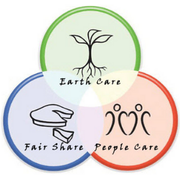
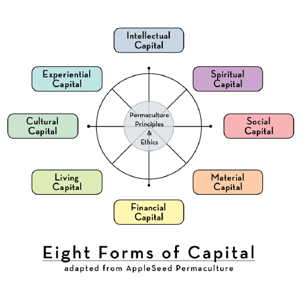
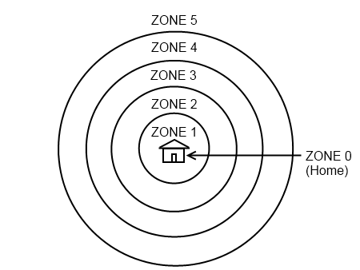
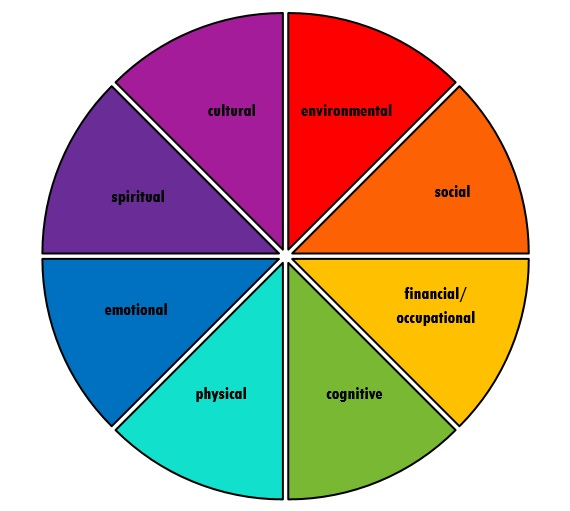

Social Permaculture
A Regenerative Design Framework
Spoiler:
At the conclusion of this article I’m not going to ask you for anything.
Well, there’s an implicit ask that you consider whatever you have read.
It’s pretty common practice, even for me, to put forward the best work I can and close with a prompt. But, I want you to take this all in knowing that there’s no hook at the end — to really see what is being presented here. I’m offering an overview of the entire theoretical basis of what I hope to be my life’s work. So, I’ll just say it here, I would be enormously grateful if you would:
- support this work on Patreon
($2 dollars a month to ensure that this work continues to advance) - sign up for the SQGLZ Epistle
(two emails a month that help keep social change out of Zuckerberg’s control) - follow me on Instagram
(two clicks from this page that will make us both smile more than once)
That’s it. No more asks. Now, I submit for your harshest judgement, my breakdown of the fine art and emergent science of social permaculture.
Introduction
I strongly believe that a good introduction will always tell you how to get the most out of a piece of writing. This introduction is no exception. If you read nothing else …
In composing this overview of social permaculture your author has one central goal and a few objectives and notations. My central goal here is to present social permaculture as I see it — a fantastically apt framework for elevating the condition of society. Along the way, I hope to convey the nature of the work. I’ll show what is involved in it, how its aims are achieved, and why it may present some advantages which other modalities do not. Importantly, I’ll be touching on what I see as the most central features of the design framework. There are others.
The social permaculture design course usually lasts about six months, including both intermittent gatherings and some solo work. So, nothing will be covered in depth here. But the big stuff is — hopefully — all addressed.
It is imperative to stress that while nothing stated here has been generated in a vacuum, all of the views expressed here are those of your author — Deacon Rodda — and constitute the prerogative of the internationally extant design firm SQGLZ. These opinions are not all shared even among the organizations for which I perform services. For instance, in this essay and those on the same subject yet to come, I will offer criticisms of leftism. It is this author’s opinion that well meaning people merit a better sociological framework than leftism — or any political framework. Additionally, I’ll probably bring up God in one way or another. As I develop as a thinker of thoughts, I find it increasingly difficult to discuss anything of consequence without God coming up once or twice. And, frankly, I have grown tired of working around it.
Wow! What kind of design firm is this, not afraid to talk about religion and politics in the same essay? Surely, madness is afoot.
Closing introductory thought: I know I write some long pieces — by comparison to the average read on Medium at least. That’s why I try to give my sections descriptive titles. Textual communications are random access by nature. Why read anything but fiction directly from start to finish? You’ll get more value out of this, and all of my longer pieces, if you scan through and read the section headings first. I encourage you to skip around and get whatever calls to you; the whole article will be here if you want to read parts of it later.
Thank you for your time. I truly hope that this document becomes useful to you as a resource and to me as a lodestone. Together, we are doing something that will benefit many.
Why Permaculture
In the early 2000s, when the collective of changemakers with whom I was living and working started a web of experiments involving permaculture design, one of the most generative discoveries we made was that permaculture is a fantastic container for other design systems. It is implicit within any permaculture project that other crafts and design paradigms will be included.
For instance, if one is developing a typical permaculture site plan, there will be all manner of agrarian features. The center of all of these features is the home itself. Permaculture canon has some things to offer about directing water run-off and using sunlight, but permaculture is not an architectural framework. There are, though, architectural frameworks — like earth ship building and the nature of order — which align perfectly with permaculture.
Further, permaculture — for all of its emphasis on agrarian self-sufficiency — is somewhat light on guidance with regard to actually cultivating annual crops. Many permaculturalists will simply employ common raised beds. Others go all out and employ systems like Rudolph Steiner’s biodynamic gardening (not for the casual hobbyist).
So, permaculture isn’t so much a method of gardening. It is a good framework for developing a gardened environment because it is concerned with what design principles are most generative for creating living systems. However, permaculture itself is not limited to gardens, farms, or even physical sites. It is a framework for developing life-giving systems and a container for more specialized design systems, which connects those systems and the products they produce to deeper values and bigger pictures.
The Transition Movement
Mostly identified with environmentally focused self-sufficiency initiatives in small towns and urban neighborhoods in the U.K., Transition is a grassroots movement toward stable, low-impact modes of living. Transition is most clearly identifiable by its non-revolutionary, non-reformist approach. Transitionists do things themselves and for themselves. In general, they also do those things in simple, deliberate steps and in ways which don’t step on the toes of government officials or other change-making groups.
Several years ago, I made this little cartoon explaining Transition, and I feel like it still holds up alright.
Transition isn’t an argument against traditional political action. It simply isn’t traditional political action. No doubt, many individuals engaged in Transition initiatives are also quite politically active.
Transition and permaculture are perfectly compatible modes of operating. One could actually say that permaculture is a fantastic framework for designing Transition initiatives. The two philosophies dovetail perfectly together.
Three Ethics
Superficially, the three permaculture ethics look quite a bit like the structure of the triple bottom line of green capitalism. However, permaculture is anything but capitalistic.
As concepts go, these ones explain themselves pretty well — though there is a good deal of writing on them. The simplicity is a feature.
There is some room for what it means to ‘care’, but I find that the twelve permaculture principles clarify that pretty readily. I’ll just add a few things about that sublime place where all three ethics meet — also known as ‘where the magic happens’.
By virtue of the people’s prosperity, even a leaderless domain will be orderly.
— The Arthashastra
Permaculture is a design framework for generating abundance. Many green-minded folks focus on the fact that the earth is finite — because it’s true — and because it is very easy to see our work as existing in opposition to such fallacious worldviews as capitalism.
Nature is home to many forces. Life is that force of nature which reverses entropy wherever it finds traction. Permaculture is a framework for nurturing life. Nurture life for a little while and you will find yourself in abundance. Plant a few kernels of corn. Take care of their shoots. Soon, you will have many thousands of kernels of corn. Life is this way. It requires you to show up, but it does not require proportional investment to return. The returns we receive from aligning ourselves with natural systems are:
- exponential in result
- nothing we can take credit for
God says, “You plant the seed; I’ll grow the tree.”
— Jim Rohn
An honest gardener doesn’t take too much credit.
When we live in the simple understanding that when we combine one ounce of knowledge, one ounce of effort, and one ounce of patience what we receive in return is many pounds of bounty. Seeing this, any honest person is compelled toward generosity.
Those above secure their homes by kindness to those below.
— I Ching
I’ll close the bit on ethics with this: Toward the end of this essay, there’s a section on other frameworks which I find nest within social permaculture quite nicely. They are largely chosen because they each align with these ethics entirely — even if not everyone who employs them is so moral. While permaculture is a manifestly expansive container, its membranes are only semi-permeable. Not every design system which shows efficacy belongs inside.
Twelve Principles
As a set of principles, this set is beautiful. Each principle is so like the others that nearly nothing you can do which corresponds to one of them only corresponds to one of them. Yet, none of them are redundant, and it would be very difficult to add anything to the set.
Without extending an elaboration of each principle, I will point out that permaculture is known for producing gardens. Yet, none of these principles illustrate how to build soil — not exactly. None of these principles specifically mentions the growing of plants. There’s no explicit imperative toward seed banking or compost turning. Looking only at the principles, a lot is left to the imagination.
The principles of permaculture are principles of process. These points of process are about bringing ourselves into alignment with the mechanisms of life. Every one of these principles is a matter of biomimicry. These are the rules which all living things intuitively follow — except us. We have either forgotten or have had these principles hammered out of us by compulsory education. In either case, what we find, once we start to move within them, is that we slide back into them quite easily.
For instance, permaculture tells us to integrate rather than segregate. Applied to land-based permaculture, we start to garden in guilds, building jungly vegetable beds which crowd out weeds, recycle water multiple times, and produce enormously more food per square foot than a typical garden bed. And, very soon we are working less and receiving more food. When we apply this same principle to education, and stop teaching subjects in isolation from each other, we find that children do not get bored. All of a sudden, we can cover five times the subject matter in the same time and with better retention.
An Economic Paradigm
Eight Forms of Capital
While the business-as-usual world recognizes only financial capital, permaculturalists recognize a whole cosmology of forms of capital which make up the abundance of life.
Capitalism, by design, ensures that the other forms of capital recognized here will be depleted to generate financial capital and further increasingly centralized control of society. Social permaculture design practices have proven to be effective interventions which mitigate this harmful pattern.
Further, once a community’s capital is assessed according to this framework, they immediately hold a more realistic picture of their wealth. The power of this realization is incredible and produces actionable possibilities in all cases.
Slow Spread Sink
Each form of capital is an energy and all energy has the power to encourage life or to route it. Concerning all wealth, whether it is financial, spiritual, social, etc. permaculture offers the same economic paradigm. Life is encouraged when energy is slowed, when it is spread widely, and when it is sunken — invested into deep reserves.
Consider the Grand Canyon. That beautiful trench is the work of a mighty currency which has moved quickly, narrowly, and superficially. The Colorado River cuts deep into the ground, but the water that does the cutting never soaks in, because it never spreads out, because it is moving quite quickly.
A poor community is exactly the same. People provide their labor to the government or to a major corporation, and those workers spend the money they earn with the land owners, utilities, and retailers who own extractive properties in the area of the community. Those firms are based far away and do not spend back into these communities a single cent more than they have to. Any community in which access to currency only exists from sources outside of the community and in which access to goods and services means paying someone outside of the community will always be poor. Consider how quickly money enters and exits a place like this. Consider how little it spreads when it does enter the community. Consider how shallowly it penetrates, how few investments can be made before that currency leaves the community.
Permaculture urges us to develop interventions which slow the pace of resources in all eight forms of capital. Having slowed the flows, we are to design networks which distribute those resources to encourage growth in the myriad niches available in any environ. And, within those distributed networks we are to design structures which direct currency to generate commodities which can be assembled into capital — the process of sinking.
When this is done, abundant wealth is generated.
Established Methods of Inquiry & Design
In addition to the guiding cosmology of memes described above, permaculture comes with a standard set of processes. Each can be nuanced and is covered at length in books such as Gaia’s Garden (land-based) and Change Here Now (social). These methods are also extensively workshopped in any permaculture design course. Hopefully this will provide some feeling of what the permaculture design workflow is like.
Zone & Sector Mapping
Like any good design framework, the permaculture process begins with inquiry. And, like any formal process, that inquiry is structured. Permaculturists, whether land or socially based, work on specific sites — areas where they have access to investigate and intervene. So, the boundaries of the work exist within a clear and agreed upon scope. In the case of land based permaculture, this is usually a garden or a farm. In the case of social permaculture, this is usually an organization or a community.
Zones
Designing systems to radiate from a center, namely the human home, roots the permaculture design logic firmly in the reality of natural economics. The most valuable and versatile resource that exists on this planet is human attention. With adequate human attention you can change the course of a river or split an atom. Nothing of this earth compares to the power of a focused human mind.
I’m going to prompt you to pause here. The above paragraph may seem pretty obvious, maybe even arbitrary, but it changed my life to realize and then deeply contemplate that one simple thought. Truly, no element in the natural world or all of the ethereal economics of our society can rival the value of human attention.
So, thank you for lending me yours.
I truly hope this is helpful so far.
Whether in land-based or social permaculture, the home and all of its inhabitants are represented by zone zero. Radiating from that center we establish proximate, nested zones into which we place the elements of our composition. In land-based permaculture, we would put culinary herbs which we might use throughout the day in zone one, very close to the back door. We would put fruit trees, which need only occasional maintenance and harvesting over a few weeks once a year, much further out. Between these, we would put hearty annual crops, which require a level of attention somewhere in the middle.
In social permaculture, we acknowledge the natural zone of intimacy which forms in zone one, close friends, colleagues we spend long hours with, and extended family. Beyond this there are zones in which we are decreasingly active and influential. Each zone has distinct attributes which help us to determine which types of social design elements and interventions to employ in achieving different objectives.
In zone three, the zone of cooperation, we find groups of 25–50 people. This is the upward limit for productive business teams or educational units. I reference the work of economist Juliet B. Schor frequently. She has written extensively on design solutions which apply only in this zone. Other practices and design features only apply at more central zones, such as authentic relating, which is only productive at zones zero and one, or heirloom currencies, which serve little to no benefit in zones 0–3.
Another worthy pause: The above described zone system is super simple. However, in the plain logic of the immediately preceding paragraphs, sits the central fundamental reason that social permaculture is simply better than political ideologies. The left would have us believe that centralizing power, in a way that removes personal responsibility from the individual, is the way to solve problems. The right would have you believe that vesting all power in the rugged individual, feeding a culture that worships selfishness, is the way to solve problems. Those are crude descriptions, but they track. By contrast, social permaculture doesn’t assert any universal and circumstantial correct answer to how far from the individual decisions in general should sit. This is why it isn’t a political ideology (there can be no permaculture platform doctrine). The answer is always, “it depends.” Social permaculture inquires about each site, each project, individually. It seeks to center the power and responsibility for any given issue at the most appropriate zone — for that instance. What’s more, because it is a design system, it acknowledges that different designers could come to entirely different — and equally satisfactory — design solutions. It isn’t about having the right answer. It’s about solving problems.
Politicians offer answers. Designers deliver solutions.
And, just in case I’ve left any ambiguity in my representation of this opinion, I’ll put it very plainly. Permaculture is not a peer to leftism or rightism. It isn’t a kinder, gentler version of the left. It is different in kind.
Permaculture makes political leftism and political rightism entirely obsolete ways of thinking (in all contexts, in all venues) because it is not only a more reasonable perspective, it is a better type of perspective.
Sectors
When conducting site design for a land based permaculture project, the designer takes into account topology, the directions of prominent winds, the angle of the sunlight at that particular latitude, the origin of loud noises, etc. These influences make up our sectors. They sweep across the zones, applying their influence in a somewhat uniform but contextually experienced way. When we lay the sector map over the zone map, well, a good deal of our design work is already done for us. The combination of these considerations provides us with a clear graphical representation of our challenges as well as some of our most salient free resources.
In the context of social permaculture, our sectors are the domains in which we live. Our physical health, our career, our spiritual existence, each of these is a sector which brings us sustaining opportunities as well inherent challenges to overcome. When we overlay the concentric circles of the social permaculture zones onto the set of social permacultural sectors, we see an immediate and highly generative map for taking stock of our lives or the condition of an organization. The social permaculture design process thus provides a lense for understanding your life, your organization’s standing, or your community’s position in a way that is clear, detailed, and actionable.
Design Elements
Design elements are the individual components of a composition. In land-based permaculture an element would be something like a chicken, a plum tree, or a boulder. Each of these elements has properties which could represent input needs and output yields. A chicken outputs nitrogen, which a plum tree needs to produce fruit. A boulder, when sunken partway into the ground, soaks up and slowly releases a lot of solar energy, making a nice microclimate for the insects which the chicken would like to eat.
Social permaculture design elements consist of spatial design and furnishings, work schedules and production routines, communications platforms and established norms and known terminology, cultivated habits, relational practices and rituals, points of process, incentive systems, etc. By creating and organizing the elements which give rise to the individual’s experience of life and the collective’s embodiment of relating, we seize responsibility for what is normally thought to be merely circumstantial.
Needs & Yields Analysis
The late, great Toby Hemenway articulated a mind expanding process for chronicling the attributes of design elements in such a way that they would practically insert themselves into a design once the zone and sector analysis was complete. For land-based permaculture the analysis would include everything which was an obvious need, such as food and water, and yield, such as eggs and manure. The analysis would also include all attributes which were less obvious needs and yields, such as behaviours, color, texture, size, etc. By developing this expansive view of all elements, one can much more quickly find ways of stacking functions and building efficiency and redundancy into systems. In this way, a permaculture site becomes increasingly self sufficient and stable over time.
Guilding
Among the immediately clear wins which observers of permaculture can point to, few stand out so much as the extensively documented guild systems. Taking design elements like those mentioned above and extensively testing them in relation to each other, permaculturists have found configurations which produce particularly abundant results. The most famous of these is the Mayan Three Sisters Guild, which actually includes around thirty species of mutually supportive plants when fully developed. This guild is built around corn, beans, and squash — each of which provide for the needs of the others.
Working with the guild system in social permaculture is no less generative, though as robust a body of known guilds has not yet been assembled as canon. As for your author’s work, I use two seperate iterations of an element from the Kaizen System as centerpieces of different guilds. That centerpiece is the Kanban Method, a process of moving objectives through stages of development. One guild built around a Kanban is the personal mastery board; another is the spaced repetition board. Each is a Kanban board, but different secondary elements are plugged into each Kanban board making them into different guilds.
Another example of a social permacultural guild would be a ritual for a community of practice. The centerpiece of the guild might be circle dialog, or breaking bread. Into this any number of social norms could be added. Decision making processes could be tacked on. And, within each major function smaller elements (norms and stacked functions) can be nested — like, no grief talk until dessert or clean up is the time for privately asking about people not present. That might sound like a simple description of how dinner parties tend to go. However, largely through being attentive and intentional about the way they interacted and held conversation at a weekly diner party, a small group of people in Totnes, England, managed to take over their towns infrastructure. They began by taking control of the local food supply and leveraging that win into gaining control over the power grid, and other local resources and utilities. It all came from not letting their intentions idle for the sake of socializing.
A Regenerative Pattern Language
Each of the above features of permaculture is fundamentally the same in both land and social permaculture. One substantial innovation which is specific to the social side of permaculture is the pattern language for regenerative change. This set of patterns was developed by Adam Brock over half a decade of broad research and direct work with several social change organizations. Brock identified dozens of positive patterns which contribute to successful social structures.
These observations have been assembled into a pattern language, a process technology formerly used only in structural and software architecture. This pattern language has been chronicled in the text Change Here Now.
In pattern languages, any design feature which proves to be consistently beneficial when applied in a given context and according to observable methodology is known as a pattern. The consistency of the context and method combining for predictable success makes the feature worth repeating — hence the term — pattern. By contrast, consistently dysfunctional components of systems are referred to as anti-patterns.
In Change Here Now, 82 patterns are articulated for evolving culture, resisting oppressive forces, and constructing a regenerative economy. A few examples include:
Rites of Passage
Hold space for members of your community that are going through transformative experiences.
Xeric Enterprise
Keeping overhead costs low reduces a business’ exposure to changing market forces, allowing it to survive the lean times while thriving during good ones.
Permaculture as a container for other systems
At the opening of this essay, I made note of how earth ship architecture and biodynamic garden beds fit perfectly into the permaculture framework. Both are widely accepted and employed by permaculturalists to consistent success. It really cannot be emphasized strongly enough that a central virtue of permaculture is that it is a broad, high-level set of design principles and practices which make plenty of room for more detail oriented, specialized practices.
In the realm of social permaculture, there are several practices which are swiftly gaining purchase as canon. I have already mentioned that permaculture and the Transition Movement have gotten quite cozy — especially in English communities. Another intellectual technology comes from Alexander Osterwalder and his associate’s, the business model canvas. This tool has been adopted and expanded for ecological and humanitarian work and successfully applied in a permaculture context. Detroit grown Emergent Strategies has become a consistent auxiliary framework in grassroots community organizing. More recently, Authentic Relating has been gaining support as a favored framework in zone zero and zone one practices.
Methods SQGLZ Endorses
Several methodologies which have not yet gained significant popularity among social permaculturists, but which SQGLZ leans on and believes serve this design framework quite nicely include:
- Byron Katie’s The Work
- Kaizen
- Game Theory / Microeconomics
- Bartle’s Taxonomy
- Mechanics Dynamics Aesthetics
In addition to these explicit and contemporary frameworks, I believe that there is infinite wisdom to be found in the deep classics. The Bible, the Arthashastra, the Mahabharata, the Taosist canon, etc. These works can be returned to any number of times and will never fail to give the seeker a bounty.
What SQGLZ Intends to Do with All of This
A couple of weeks ago, I published an article which described the history of SQGLZ and what it is that I intend to do with this slowly accumulating capacity for whole systems design. In that article I laid out a series of Big Hairy Audacious Goals: (in order)
- Establish a consistently used heirloom currency
- Solve homelessness in Denver
- Provide a readily accessible framework and platform for primary education, globally
The feedback which I received mostly came down to, “Well shucks, how are you thinking you will do all that?” Which is more than valid. I have no business believing that I can succeed at one tenth of any of these goals. In fact, if I did manage any kind of success alone it would be pretty meaningless. These are inherently collective goals. These are things which have to be done by groups of people. Fortunately, a solid group has formed around the Favor; the rest will come in time.
This article, in all its blarney, is honestly just a cursory scratch into the surface of how all of that will happen — if it is to happen. And, it will take many hands, many people with more specialized domain knowledge than me.
Achieving goals like these will take resources and design insights which aren’t even available to me right now. But, I have a method of inquiry and discovery. I know how to make the design insights reveal themselves. That’s what permaculture is. It is a method for conjuring designs right out from the problems themselves.
Thank you for your time!
cheers,
Deacon Rodda